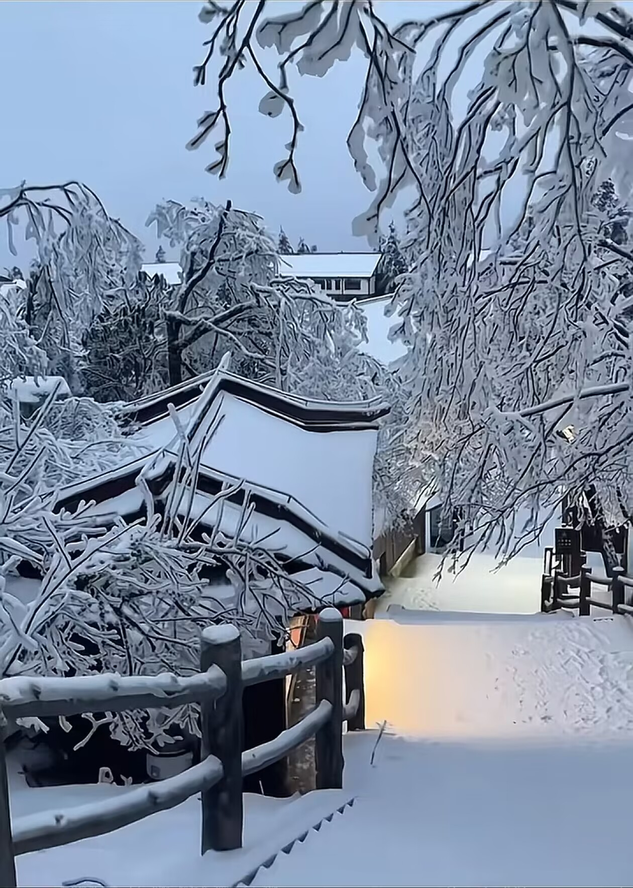
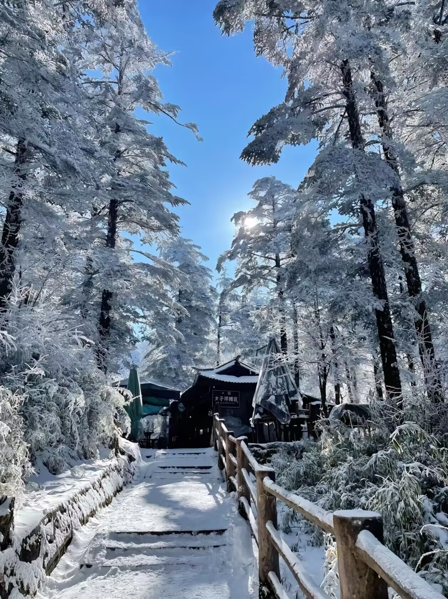
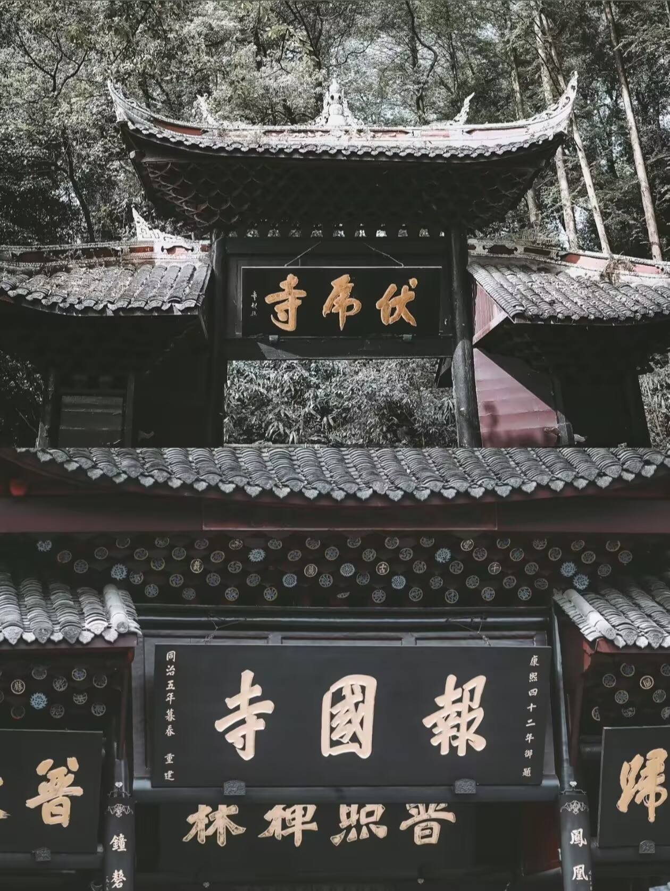
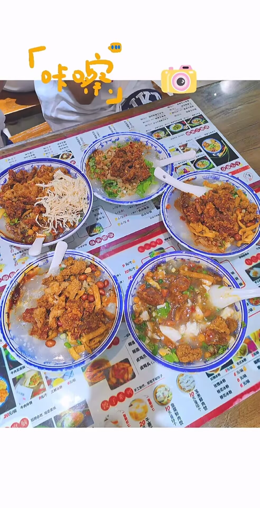

欢迎来到我的博客
在这里，你将领略到科技的魅力、旅行的精彩以及我的独特故事。
探秘 AI：当下发展与生活赋能全解析
在科技飞速发展的当下，若要评选一项最为耀眼、颠覆性最强的前沿科技，人工智能（AI）绝对当仁不让，一路高歌猛进，深度重塑着我们生活与世界的方方面面。
AI 技术的进阶之路
深度学习算法堪称 AI 领域的 “超级引擎”，这些年持续迭代优化，推动 AI 在图像识别、语音识别、自然语言处理等维度屡攀高峰。如今的人脸识别系统，精准度远超人类肉眼识别水平，广泛应用于安防门禁、机场安检，刷脸支付更是让消费结账变得秒级高效；语音助手也不再是简单听从指令的 “小跟班”，复杂语义、方言口音都能精准解析，成为居家、出行时贴心的智能伙伴。强化学习领域同样成果斐然，赋予 AI 系统自我 “成长” 的能力，在机器人操控、复杂决策场景大放异彩，像是工业生产线上的智能机器人，能依据实时工况灵活调整作业流程，高效精准完成任务。
放眼全球产业格局，AI 更是掀起前所未有的发展浪潮。据专业机构麦肯锡预估，到 2025 年，全球人工智能应用市场规模总值将飙升至 1270 亿美元。产业链上下游协同发力，AI 芯片性能飙升、成本可控，为海量数据运算筑牢根基；传感器愈发灵敏智能，全方位捕捉外界信息。在此基础上，各类 AI 技术服务与创新产品呈井喷之势，吸引无数企业跨界入局，产业生态繁茂得超乎想象。企业界也纷纷将 AI 视作战略高地，科技巨头重金招揽 AI 人才，组建顶尖研发团队；传统企业亦不甘落后，融入 AI 优化业务流程，力求在数字化浪潮中站稳脚跟。政策层面，各国政府极具前瞻性，纷纷出台扶持政策，从专项科研基金到人才培养计划，全方位、多层次为 AI 发展保驾护航，助推 AI 步入发展 “快车道”。
AI 赋能生活的便捷密码
AI 带来的便利，早已全方位渗透进日常生活。忙碌一天下班回家，智能家居系统宛如贴心管家，手机一键操作，空调提前制冷、热水器预热就绪，灯光亮度、室内温度智能调节，归家瞬间被惬意包裹；闲暇时光，唤醒智能语音助手，不管是查询明日天气、播放心仪歌曲，还是设定工作提醒，它都能精准执行，解放双手、畅意生活。
出行时，智能导航实时对接交通大数据，精准避开拥堵路段，规划最优路线，通勤时间大幅缩减；无人驾驶虽未完全普及，但已在不少城市试点运行，未来可期，届时长途驾驶的疲惫、交通拥堵的烦躁都将成为历史。
医疗场景里，AI 辅助诊断堪称 “火眼金睛”，极速剖析海量医学影像，细微病灶无所遁形，助力医生精准诊断，大幅提升诊疗效率；智能健康监测设备全天候守护，血压、心率、睡眠质量等数据实时上传，健康趋势一目了然，疾病预防关口前移。
教育领域，智能辅导系统化身专属 “私教”，深度剖析每个学生的学习进度、知识短板，定制个性化学习方案，枯燥的学习过程变得趣味盎然、高效优质。
职场日常，AI 化身高效助手，繁琐的数据录入、文件分类整理、报表一键生成等事务轻松搞定，打工人得以抽身专注于创意构思、战略规划这类高附加值工作，职场幸福感直线攀升。就连获取知识信息，都因 AI 问答系统如 ChatGPT 的问世变得轻松写意，学习、工作中的难题分分钟迎刃而解，无需埋头书海、四处求教。
AI 已不再是科幻电影里遥不可及的幻想，而是真切融入生活点滴、赋能社会前行的关键力量。站在当下回望 AI 发展历程，震撼于它的成长速度；展望未来，更满心期许它解锁更多未知可能，携手人类奔赴科技新纪元。
峨眉揽胜：邂逅仙山佛国的极致浪漫
“蜀国多仙山，峨眉邈难匹。” 在华夏大地的西南一隅，有一座拔地而起、风姿绰约的仙山 —— 峨眉山，它像是大自然倾尽心力雕琢的艺术品，又似岁月沉淀下来的禅意诗篇，从古至今，散发着令人无法抗拒的魅力，吸引无数旅人前来探寻、朝拜、沉醉。
初遇峨眉：山色入眼，诗意满怀
踏入峨眉山景区，仿若一脚跨进了世外桃源。葱茏馥郁的植被是它迎接宾客的第一份厚礼，山峦被林海密密匝匝地包裹，那些参天古木，有的历经数百年风雨，依旧枝繁叶茂，撑起一片幽绿的苍穹。阳光斑驳地洒落，在石板路上绘出光影交织的画卷，深呼吸一口，满是清甜润爽的草木香气，心肺瞬间被涤荡得干干净净。
沿着蜿蜒曲折的山路徐徐前行，耳畔奏响的是山间独有的交响曲。潺潺溪流从石缝间涌出，汇聚成灵动的小溪，水花跳跃、欢腾，一路高歌奔赴远方；偶尔几声清脆鸟鸣，婉转空灵，似在与流水应和，又仿若自顾自诉说着山林趣事。远处，云雾在峰林间缭绕、翻涌，峨眉山的诸峰半遮半掩，恰似犹抱琵琶半遮面的佳人，朦胧间尽显娇羞柔美，初见的这份惊艳，已足够让人沉醉不知归路。
 金顶奇观：佛光耀世，震撼心扉
若说峨眉山是一顶皇冠，那金顶无疑是皇冠上最璀璨耀眼的明珠。历经数小时攀登，当金顶那恢宏壮丽的建筑群豁然闯入眼帘时，满身疲惫瞬间烟消云散。高达 48 米的十方普贤金像庄严肃穆，在日光映照下熠熠生辉，圣洁的光芒仿若能穿透灵魂，驱散心头阴霾；金像周身云雾缥缈，时而轻纱拂面，时而汹涌奔腾，更衬得菩萨宝相庄严，似是随时可能腾云驾雾、普度众生而去。
而金顶一绝 —— 佛光，更是可遇不可求的神奇天象。运气绝佳时，云雾弥漫的崖边，会骤然出现一圈七彩光晕，观者自身的身影置身其中，如梦似幻，仿若被佛光加持、庇佑。那一刻，周边游客的惊呼声、赞叹声此起彼伏，但更多的是沉浸在这份震撼里的噤声不语，只静静凝视着那抹绚烂，满心敬畏，仿若与天地神灵完成了一场无声对话。
禅意古刹：青灯黄卷，佛音袅袅
峨眉山作为佛教名山，寺庙林立，每一座古刹都承载着厚重历史与深邃佛法。报国寺庄重典雅，红墙黛瓦隐匿于苍松翠柏间，迈进寺门，香火缭绕，木鱼声声、梵音阵阵，直击心灵深处。寺内建筑雕梁画栋，飞檐斗拱尽显古韵，殿堂供奉的佛像慈眉善目，低眉垂目间散发着慈悲祥和的气息，引得信徒虔诚跪拜、喃喃祈福。
伏虎寺清幽静谧，四周楠木成林，相传林中老虎曾被高僧驯服，故而得名。寺庙巧妙借助山势地形而建，布局精巧，寺宇与山林融为一体，漫步其间，仿若穿越千年时光，邂逅古僧大德在此参禅、诵经的日常。在这里，时间都变得缓慢而悠长，尘世纷扰被隔绝在外，只剩内心的澄澈安宁。
舌尖峨眉：烟火滋味，口齿留香
赏景之余，峨眉山的美食亦是不容错过的舌尖盛宴。峨眉山雪魔芋，质地松软却不失嚼劲，吸饱了鲜美的汤汁后入口，麻辣鲜香瞬间在舌尖爆开，独特口感堪称一绝；峨眉山老腊肉，历经腌制、风干、熏烤多道工序，外表焦香，内里肥瘦相间，肥而不腻、瘦而不柴，蒸煮后香气四溢，下饭佐酒皆是佳品。还有各类清甜爽口的野菜，凉拌或是清炒，满满都是山间的质朴本味，一口下去，唇齿间尽是大自然的馈赠。
峨眉山，这座集自然风光、佛教文化、美食珍馐于一身的奇山，无论你是追云逐雾的背包客、虔诚向佛的信徒，还是贪恋烟火的食客，它都能全方位满足你的期许。来过，便会沉醉在它的山色禅音、烟火日常里，成为心底魂牵梦绕、割舍不下的那片净土，待时光沉淀，再度奔赴，续写与它的唯美诗篇。踏上归程时，频频回望，满心笃定：此别，不过是为了下次重逢。
关于博主
本人爱打游戏，沉迷各种手游（王者，金铲铲，以及各种小程序游戏），闲暇时爱刷抖音，追剧，听音乐，总之就是一个手机重度依赖者。